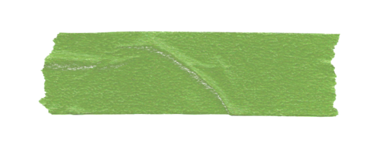
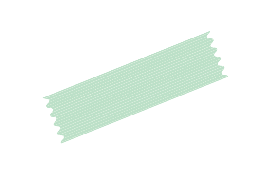

describe what joy feels/looks like to you


rw:
Um, there's a lot because, um, it's new even in the winter.
So the big sad is creeping and creeping about.
um, for me, joy is a feeling of deep connection with other people.

So the big sad is creeping and creeping about.
um, for me, joy is a feeling of deep connection with other people.
... joy is feeling without a doubt that i am not alone.
just like community and care and holding space for other people, knowing that like space is also being held for me.
like a mutual sharing of space.

just like community and care and holding space for other people, knowing that like space is also being held for me.
like a mutual sharing of space.